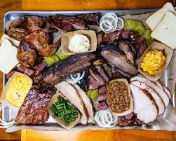

Texas feels big — in history, variety, and spirit. Cities like Austin and Houston buzz with music and innovation while ranchland and wide-open skies remind you of the state’s cowboy roots. Food is a highlight: smoky barbecue and Tex-Mex dominate the table.
The Alamo

TexasBBQ
What to Expect
Expect warm hospitality and strong regional pride. Museums and historic sites offer a look into Texas’ past, while modern districts in major cities showcase live music scenes, technology hubs, and diverse dining options.
Quick Facts
| Capital | Austin |
|---|---|
| Known For | BBQ, ranching, live music |
| Famous Food | Texas BBQ, Tex-Mex |
| Popular Spot | The Alamo |